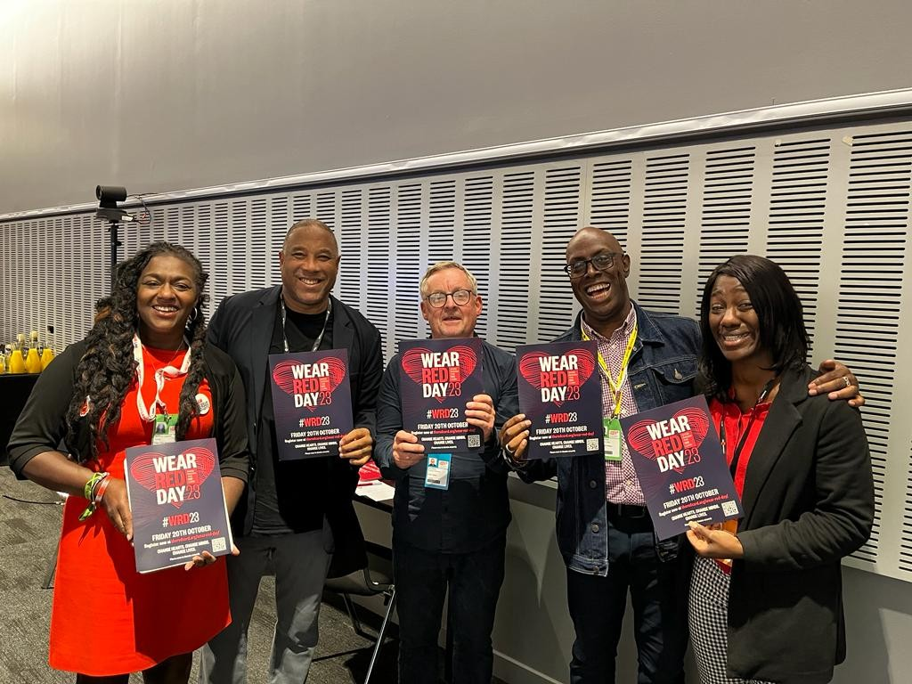
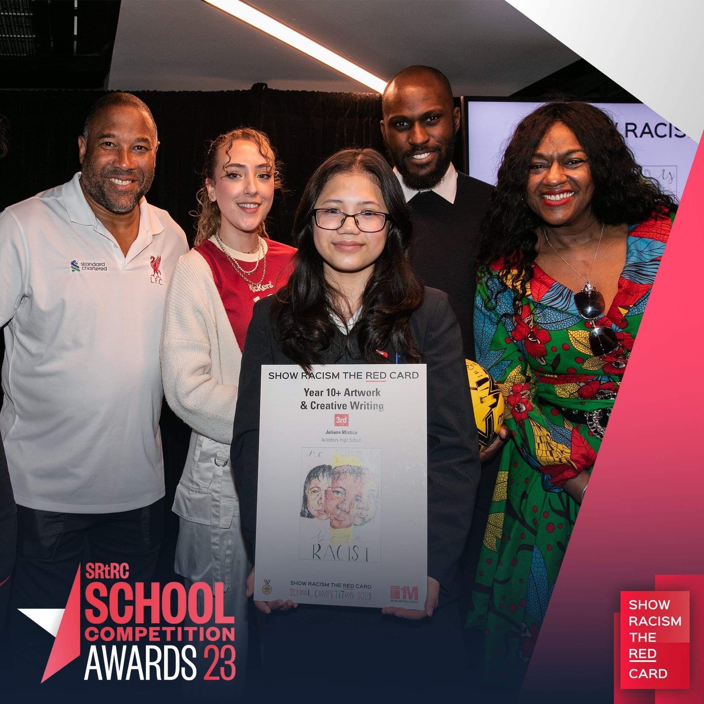
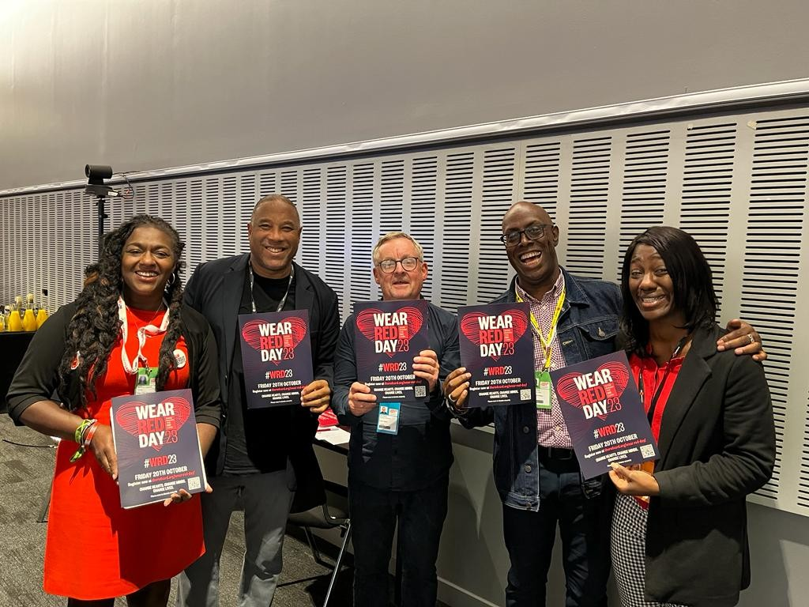
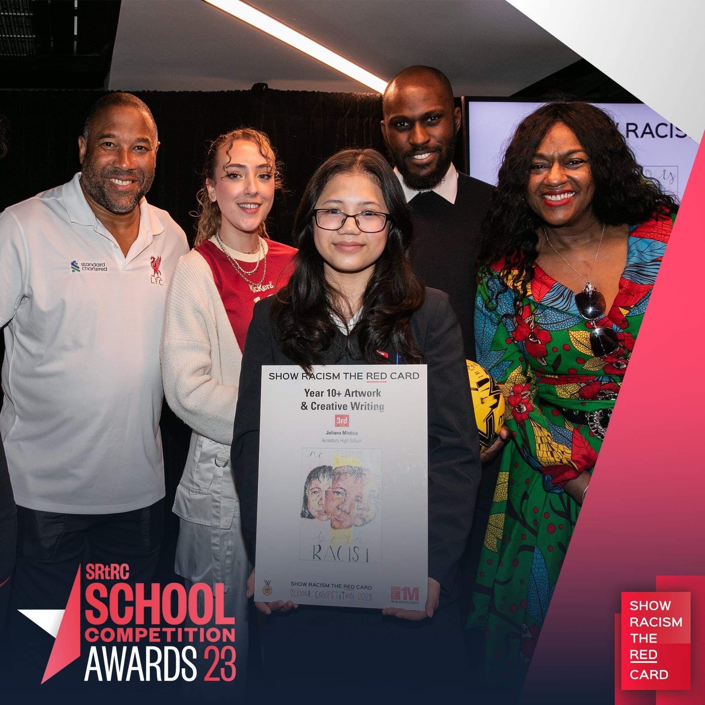
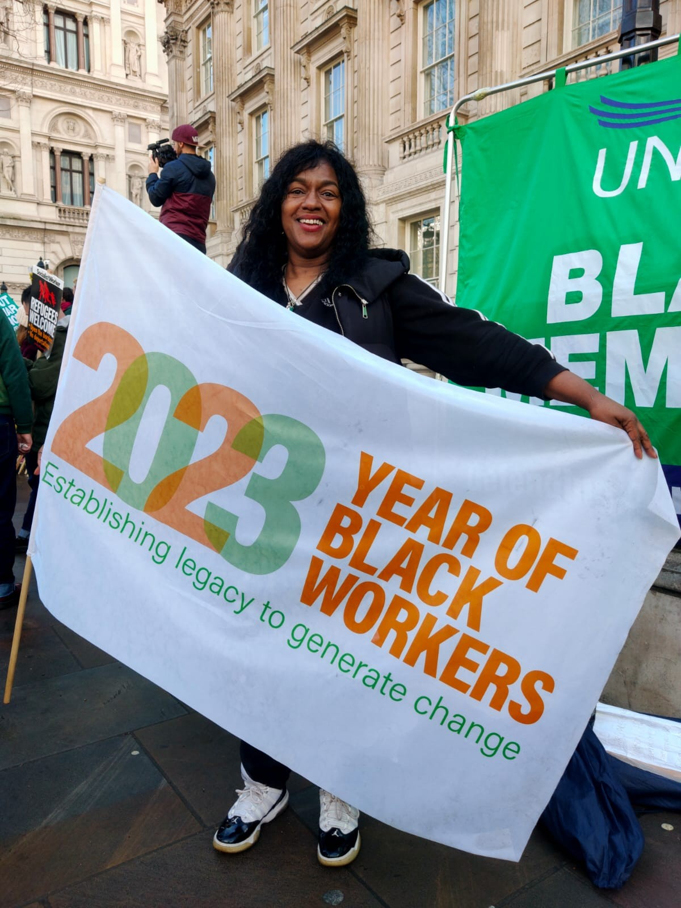
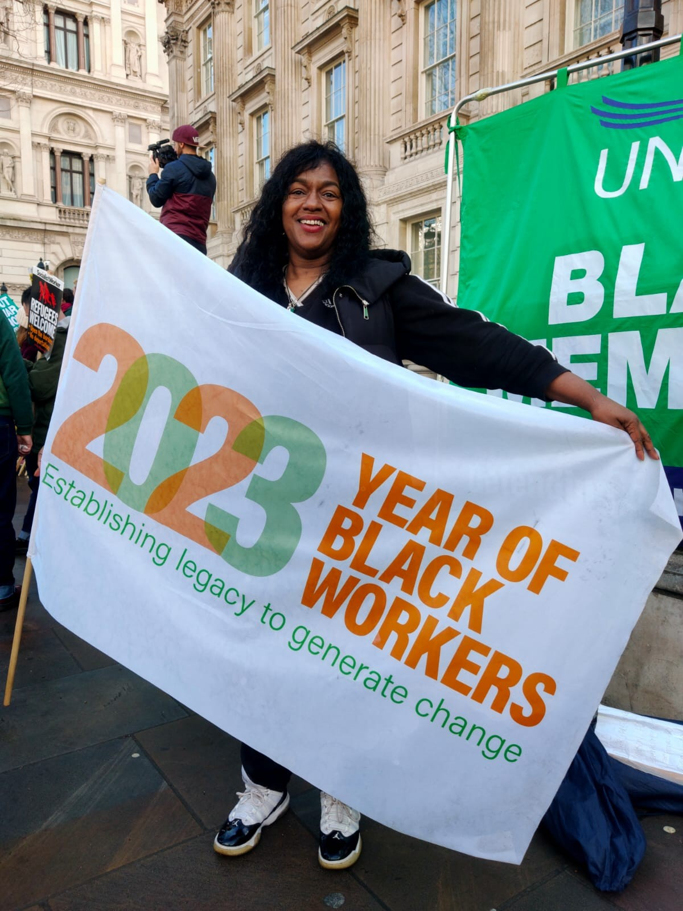
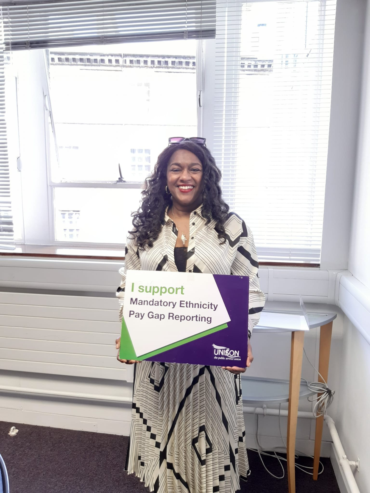
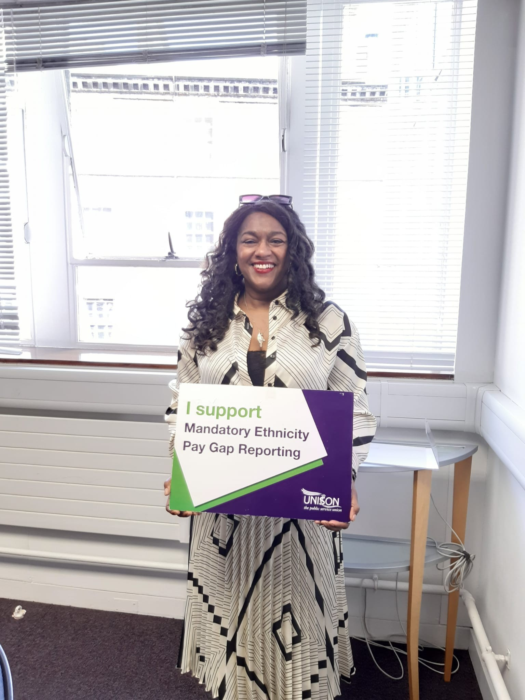

About Elizabeth
Embark on a transformative journey with Elizabeth Cameron, a dynamic change-maker with 25 years of extensive experience across Public, Private, and Third sectors. Elizabeth's unique approach is driven by an in-depth understanding of the client perspective and a steadfast belief in every moment as an opportunity for change.
Her dedication to equality has been instrumental in the co-creation of the UK Disability Passport, a testament to her commitment and expertise.
Our Purpose
At EC-E Ltd, we believe that integrity is the cornerstone of our services. We offer dynamic, engaging, challenging, and intentional services aimed at fostering healthy work environments.
Our unwavering commitment to creating discrimination-free workplaces where psychological safety is paramount makes us the ideal partner for your organization.
Our Services
- Equality, Diversity, and Inclusion Consultancy
- Education & Training tailored to your needs
- Performance and Cultural Competence Coaching
- Bespoke Programme Creation for your workforce
Expertise
Elizabeth is not just a motivational public speaker — she’s a Racial Equality expert who provides strategic insight on Equality, Diversity, Inclusion, Unconscious Bias, and the Equality Act 2010.
Experience
Having worked across public, private, and third sectors, EC-E Ltd brings a wealth of expertise in participation, engagement, and democracy — shaping strategy for service delivery and commissioning.
Partnerships
Our collaborations include organizations such as the Labour Party, GMP, Autotrader, BBC, and the Church of England. Each partnership has deepened our understanding and sharpened our impact.
Working Style
Elizabeth fosters systems that drive meaningful culture change and engagement at the highest decision-making levels. As chair of a racial and equality board for GMCA, she continues to lead positive transformation.
Testimonials
Join Us
Join us on this journey towards a more inclusive future. Reach out to Elizabeth Cameron today to learn more about her services and programs.
Contact
Contact us at: elizabeth@ec-e.co.uk.uk
Image Gallery


 


 
